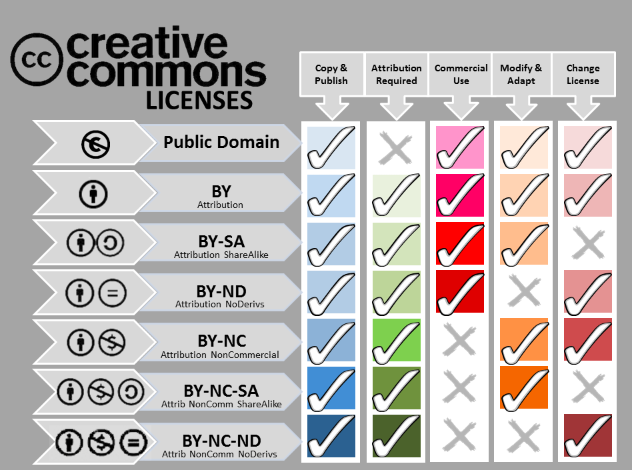

What is Invention ?
An invention is a unique or novel device, method, composition or process. The invention process is a process within an overall engineering and product development process. It may be an improvement upon a machine or product or a new process for creating an object or a result. An invention that achieves a completely unique function or result may be a radical breakthrough. Such works are novel and not obvious to others skilled in the same field. An inventor may be taking a big step in success or failure.
Some inventions can be patented. A patent legally protects the intellectual property rights of the inventor and legally recognizes that a claimed invention is actually an invention. The rules and requirements for patenting an invention vary from country to country and the process of obtaining a patent is often expensive.
What is Intellectual Property ?
Intellectual Property (IP) refers to the protection of creations of the mind, which have both a moral and a commercial value.
IP law typically grants the author of an intellectual creation exclusive rights for exploiting and benefiting from their creation. However, these rights, also called monopoly right of exploitation, are limited in scope, duration and geographical extent.
IP protection is intended to stimulate the creativity of the human mind for the benefit of all by ensuring that the advantages derived from exploiting a creation benefit the creator. This will encourage creative activity and allow investors in research and development a fair return on their investment.
IP confers on individuals, enterprises or other entities the right to exclude others from the use of their creations. Consequently, intellectual property rights (IPRs) may have a direct and substantial impact on industry and trade as the owner of an IPR may - through the enforcement of such a right - prevent the manufacture, use or sale of a product which incorporates the IPR.
What is Business Models ?
A business model is an "abstract representation of a business, be it conceptual, textual, and/or graphical, of all core interrelated architectural, co-operational, and financial arrangements designed and developed by an organization presently and in the future, as well as all core products and/or services the organization offers, or will offer, based on these arrangements that are needed to achieve its strategic goals and objectives. and in simple words A business model is the way in which a company generates revenue and makes a profit from company operations. Analysts use the metric gross profit as a way to compare the efficiency and effectiveness of a firm's business model. Gross profit is calculated by subtracting the cost of goods sold from revenues.
A business model isn’t something you build from the ground up. When management-types ask about a business model — as in, “So what’s your business model?” — they really want an answer to a much more direct and basic question: “How do you plan to make money?”
Behind the question of What is your Business Model?, is a lineup of other questions:
Workflow of Choosing the License
FAB DATA Glass - FAB DG
My final project is a Fab Data Glass which consists of the sensors and display unit ,which shows the data infornt of the eye via refecting the display light through a Lens and falls on the reflector.I want to extend the project after academy to get the data from the companion mobile App. Now at this stage of academy i have to License this work.
Licensing
" Licensing means renting or leasing of an intangible asset. It is a process of creating and managing contracts between the owner of a brand and a company or individual who wants to use the brand in association with a product, for an agreed period of time, within an agreed territory."
I have got the idea of making the Fab Data Glass from the Instructables Project Called Arduino Data Glass for Multimeter by Alainsprojects He Licesed his work under "Attribution-NonCommercial-ShareAlike 2.5 Generic (CC BY-NC-SA 2.5)" ,and also he made the project opensource have mentioned in other platform hackaday.io under GNU General Public License version 3 Thus i love my project to be opensource and acessable.i have followed his idea ,but i have designed my own development board and sensor board for getting the input and output data. as part of this course i am going through multiple schemes of Lisens caluses . i will choose a lisense to my work by the end.
Types of licenses Available
- Apache License 2.0
- BSD 3-Clause “New” or “Revised” license
- BSD 2-Clause “Simplified” or “FreeBSD” license
- GNU General Public License (GPL)
- GNU Library or “Lesser” General Public License (LGPL)
- MIT license
- Mozilla Public License 2.0
- Common Development and Distribution License
- Eclipse Public License
- Creative Commons
I have gone through MIT License ,GNU GPL License and Creative Common License
MIT License
The MIT License is a free software license originating at the Massachusetts Institute of Technology (MIT). It is a permissive free software license, meaning that it puts only very limited restriction on reuse and has therefore an excellent license compatibility. The MIT license permits reuse within proprietary software provided all copies of the licensed software include a copy of the MIT License terms and the copyright notice. The MIT license is also compatible with many copyleft licenses, such as the GPL; MIT licensed software can be integrated into GPL software, but not the other way around.
License terms
A common form of the MIT License (from the OSI's website, which is the same version as the "Expat License", and which is not identical to the license used in the X source code) is defined as:
Copyright (c) (year) (copyright holders)
Permission is hereby granted, free of charge, to any person obtaining a copy of this software and associated documentation files (the "Software"), to deal in the Software without restriction, including without limitation the rights to use, copy, modify, merge, publish, distribute, sublicense, and/or sell copies of the Software, and to permit persons to whom the Software is furnished to do so, subject to the following conditions:
The above copyright notice and this permission notice shall be included in all copies or substantial portions of the Software.
THE SOFTWARE IS PROVIDED "AS IS", WITHOUT WARRANTY OF ANY KIND, EXPRESS OR IMPLIED, INCLUDING BUT NOT LIMITED TO THE WARRANTIES OF MERCHANTABILITY, FITNESS FOR A PARTICULAR PURPOSE AND NONINFRINGEMENT. IN NO EVENT SHALL THE AUTHORS OR COPYRIGHT HOLDERS BE LIABLE FOR ANY CLAIM, DAMAGES OR OTHER LIABILITY, WHETHER IN AN ACTION OF CONTRACT, TORT OR OTHERWISE, ARISING FROM, OUT OF OR IN CONNECTION WITH THE SOFTWARE OR THE USE OR OTHER DEALINGS IN THE SOFTWARE.
GNU GPL License
The GNU General Public License (GNU GPL or GPL) is a widely used free software license, which guarantees end users the freedom to run, study, share and modify the software. The license was originally written by Richard Stallman of the Free Software Foundation (FSF) for the GNU Project, and grants the recipients of a computer program the rights of the Free Software Definition. The GPL is a copyleft license, which means that derivative work can only be distributed under the same license terms. This is in distinction to permissive free software licenses, of which the BSD licenses and the MIT License are widely used examples. GPL was the first copyleft license for general use.
Ths is the Lisense File you have to add with your source code for Lisensing your work under GNU GPL
License terms
one line to give the program's name and a brief idea of what it does. Copyright (C) year name of authorThis program is free software: you can redistribute it and/or modify it under the terms of the GNU General Public License as published by the Free Software Foundation, either version 3 of the License, or (at your option) any later version.
This program is distributed in the hope that it will be useful, but WITHOUT ANY WARRANTY; without even the implied warranty of MERCHANTABILITY or FITNESS FOR A PARTICULAR PURPOSE. See the GNU General Public License for more details.
You should have received a copy of the GNU General Public License
along with this program. If not, see
Creative Common License
It is maintained by a non-profit organization based out of America. It provide the option to legally distribute and give the work to the public. There are different flavors which the content creator can choose and make the license. I have discussed what I usually give under CC licensing.
The CC is very commonly used in licensing creative contents and you can see it around the web in many places(eg wikipedia). CC is inspired from commons ideology. The licenses is generally known as “some right reserved” similar to the “All rights reserved” of copy right.
A common standard declaration of the same is as follows
You are free to:
- Share — copy and redistribute the material in any medium or format
- Adapt — remix, transform, and build upon the material for any purpose, even commercially.
The licensor cannot revoke these freedoms as long as you follow the license terms.
Under the following terms:
- Attribution — You must give appropriate credit, provide a link to the license, and indicate if changes were made. You may do so in any reasonable manner, but not in any way that suggests the licensor endorses you or your use.
- No additional restrictions — You may not apply legal terms or technological measures that legally restrict others from doing anything the license permits.
Plan for Dissemination and choosing the Lisense
I am not planning on commercilizing the project and it was created just for the learning purposes. Therefore, I am choosing Creative Commons Attribution-NonCommercial-ShareAlike 4.0 International for my project. Full legal text of therms and conditions of the license can be found at https://creativecommons.org/licenses/by/4.0/legalcode. This licence provisions that if anyone wants to use the material my project provides, s/he can:
- Share — copy and redistribute the material in any medium or format
- Adapt — remix, transform, and build upon the material for any purpose, even commercially.
The licence also provisions that the person using materials provided by me should attribute by giving appropriate credit, providing a link to the license, and indicating if changes were made. It can be done in any reasonable manner, but not in any way that suggests the licensor (myself) endorses the person using the materials or his/her use. Furthermore, no additional restrictions ahould be applied. The person using matereials should not apply legal terms or technological measures that legally restrict others from doing anything the license permits.
The Creative Commons Attribution-NonCommercial-ShareAlike 4.0 International license is acceptable for Free Cultural Works, defined here http://freedomdefined.org/Definition. The definition states that in order to be considered free, a work must be covered by a Free Culture License, or its legal status must provide the essential freedoms (use and perform the work, study the work and apply the information, redistribute copies, distribute derivative works). Additionally, to be considered free the work has to: provide source data, use a free format, be unrestricted techinically and unlimited in othe ways.
Future Development of the Project
There are several possibilities for enhancing the current project. One of the most necessary advancements is reducing size of the Design,It could be achieved with improving networking (using esp8266 or esp32) or even making one board with a different microcontroller. i will trying level best to improve the work after academy
Conclusion
So i have Concluded my License for the entire workdone under the Fab Academy diploma is Licensed under Creative Commons Attribution-NonCommercial-ShareAlike 4.0 International.
Also included the presentation.png and presentation.mp4 in the root directory.

{kind=link}